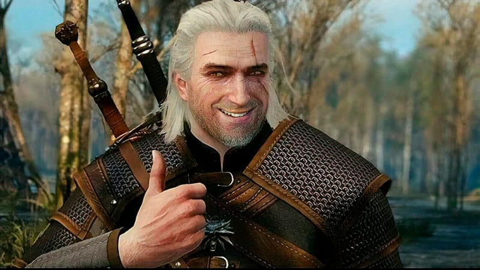

>
presentación
Saludos cordiales!
Soy Jorge Nicolas oviedo. Joven de 32 años, nacido el 07/06/1900.
Con residencia en Maquinista F savio (Escobar)
soltero.
Estudios
Poseo estudios terciarios Universitarios en Higiene y seguridad(UTN) graduado en 2021
- Gestión de las Buenas Prácticas de Manufactura (GMP)Asesoramiento
- Conocimiento en Normas iso 9001-Legislativo
- Conducción segura de autoelevador-Asesoramiento
- Electromecánica(curso integtal orientatorio)
- Montador electricista
actualmente cursando:
Programador Web Inicial - Front End Developer
link a cv profesional
reflexiones finales